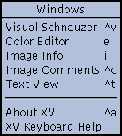
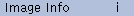
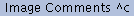
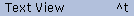
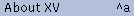

xv provides a set of controls that let you conveniently
operate on a list of images. To use the following commands,
you'll have to start up xv with a list of filenames. For
example, you could type ' xv *.gif ' (assuming, of
course, that you have a bunch of files that end with the suffix
'.gif' in the current directory).
The filenames are listed in a scrollable window, as shown
below. The current selection is shown in reverse video. If there
are more names than will fit in the window, the scrollbar will be
enabled.

The scrollbar operates as follows:
- clicking in the top or bottom arrow of the scrollbar
scrolls the list by one line in the appropriate
direction. It will continue to scroll the list as long as
you hold the mouse down.
- The thumb (the small rectangle in the middle of the
scrollbar) shows roughly where in the list you are. You
can change your position in the list by clicking and
dragging the thumb to another position in the scrollbar.
The list will scroll around as you move the thumb.
- You can scroll the list up or down a page at a time by
clicking in the grey region between the thumb and the top
or bottom arrows.
- If you click on a name in the list, that name will become
highlighted. You can drag the highlight bar up and down,
and the list will scroll appropriately.
- It is also possible to control the list window from the
keyboard. In all cases, you must make sure that the
window sees the keypress. Generally, this means you have
to have the cursor inside the window, though your window
manager may also require you to click inside the window
first.
- The up and down arrow keys move the highlight bar up and
down. If the bar is at the top or bottom of the window,
the list will scroll one line.
- The <PageUp> and <PageDown>
keys scroll the list up or down a page at a time. These
keys may be called <Previous> and <Next>
on your keyboard. You can probably also page up and down
by typing <Shift>-<Up> and <Shift>-<Down>
.
- Pressing the <Home> key will jump to the
beginning of the list. Pressing the <End>
key will jump to the bottom of the list. If you don't
have <Home> and <End> keys on
your keyboard, you may be able to emulate them by holding
<Shift> and typing the <PageUp>
and <PageDown> keys.
You can directly view any image in the list by double-clicking
on its filename. If xv is unable to load the file (for any
of a variety of reasons), it'll display an appropriate error
message.

- Attempts to load the next file in the list. If it is
unable to load the next file, it will continue down the
list until it successfully loads a file. If it gets to
the bottom of the list without successfully loading a
file, it will put up the default image.
Keyboard Equivalent: <Space>
-

- Attempts to load the previous file in the list. If it is
unable to load the previous file, it will continue up the
list until it successfully loads a file. If it gets to
the top of the list without successfully loading a file,
it will put up the default image.
Keyboard Equivalent: <backspace>
-
- This command lets you delete the currently selected file
from the list (and optionally delete the associated disk
file). Note that the currently selected file is the one
with the highlight bar on it. While this is generally the
same as the currently displayed image, it doesn't have to
be.
Keyboard Equivalent: <Ctrl> dThe Delete
command will pop up a window asking you what you want to
delete. Your choices are:
- List Entry , which will remove the highlighted
name from the list. (Keyboard Equivalent: <Enter>
)
- Disk File , which will remove the highlighted
name from the list and also delete the associated
disk file. This removes unwanted images, just
like manually typing ' rm <filename>
' in another window. (Keyboard Equivalent: <Ctrl>
d )
- Cancel , which lets you get out of the Delete
command without actually deleting anything.
(Keyboard Equivalent: <Esc>
-

- Opens the xv load window, which lets you load
images that weren't specified on the original
command-line. See "The
Load Window" for more details. Note: this
function has been mostly taken over by the visual
schnauzer (See "The Visual Schnauzer"
) but remains for largely historical reasons. (It is
considerably faster than the schnauzer,
however...)
Keyboard Equivalent: <Ctrl> l
-

- Opens the xv save window, which lets you save the
current image (or current selected area) in a variety of
image formats. See "The
Save Window" for more details.
Keyboard Equivalent: <Ctrl> s
-

- Prints the current image to a PostScript 2 device.. This
command takes a somewhat Unix-centric approach to
printing, but it may work on other operating systems.
When you issue this command, it opens a dialog box which
prompts you for the 'print' command to use. Normally,
this is just ' lpr ', but if you'd like to send
the output to another printer, you could use something
like ' lpr -Pelsewhere '. (And right after you
do that, you should change the name of that printer!) You
change the default command the appears in this window by
using the ' xv.print ' X resource. See "Other
Resources" .
Anyway, enter some command that
will have the desired effect. xv will open up the xv
postscript window, where you can fine-tune the size,
position, and rotation of your image. See "The PostScript Window"
for more information. When you press the Ok
button, xv will generate the appropriate
PostScript, and feed it as ' stdin ' to the
command you entered earlier.
Keyboard Equivalent: <Ctrl> p
It is occasionally desirable to reload an image file because
the contents of the file have changed. For example, you could be
downloading a file, and you might want to keep reloading the file
to check on the progress of the download. Or perhaps you have a
program that generates images, and you'd like to view these
images without any manual intervention.
xv provides a way to reload an image via an external
signal. If you send the xv process a SIGQUIT
signal (' kill -QUIT <pid> ', or ' kill -3
<pid> ' on most systems), the program will reload the
currently selected file. (The one that is currently highlighted
in the xv controls window filename list.) This behavior is
exactly the same as hitting <Return> in the xv
controls window. If xv is currently in a state where
hitting <Return> in the controls window won't load
an image (i.e., some pop-up dialog box is grabbing all such
events), then sending this signal won't work either.
An idea: You could write a 'clock' program that, once a
minute, generates a really spiffy looking picture of the current
time (with color gradations, 3-d extruded numbers, whatever),
then sends xv the signal to reload the generated image. If
anyone ever does this, I'd like to hear about it.
Note: This will not work if the current file was read from <stdin>
.
xv also has a 'polling mode', enabled by the '-poll'
option. When it is turned on, xv will attempt to recognize
when the currently displayed file changes on disk. (What with
UNIX being a multi-tasking OS, it's perfectly possible to have
another process modify a file while xv is displaying it.)
When the current file changes, xv will reload it.
You can use this feature to get xv to monitor all sorts
of things. For example, if you have one of those programs that
automatically goes out and ftps the latest version of the
US weather map, (and you do, in the unsupt directory),
then you can have xv automatically reload the map whenever
a new one is downloaded.
It probably goes without saying that 'PostScript' is a
registered trademark of Adobe Systems, Inc.
You could even use xv as a sort of frame buffer, to
allow otherwise non-X programs to display graphics. Just have
your program draw on its own internal 'frame buffer' (just an
appropriately sized hunk of memory), and periodically write it
out to a file in some xv-supported format. The PBM/PGM/PPM
formats are trivial to write. See the documentation in the doc
subdirectory of the xv distribution. Anyhow, periodically
write the image to a file, and have xv display the file
with the ' -poll ' option turned on. Voila! An instant
output-only frame buffer for X workstations, albeit a fairly slow
one.
|  |
As an obvious result of xv's
patented "Keep-Adding-Code-Until-It-Breaks"
Technology, there are considerably more commands,
features, cool gizmos, and dubious design decisions than
will comfortably fit in the xv controls window. Luckily,
this is nothing that bolting-on a couple more top-level
windows won't fix, which is the method that has been
used.
|
This is where the Windows menu comes into play, though
in practice you'll probably just use the keyboard equivalents to
open the other windows. I know I do.

- Opens up a xv visual schnauzer window (you can
have up to four of them). The visual schnauzer
lets you manipulate your image file collection in a nifty
Point'n'Click, Drag'n'Drop, What You See Is What You Get,
Graphical User Interface. Despite all that, it's actually
a useful thing. See "The Visual Schnauzer"
for more info.
Keyboard Equivalent: <Ctrl> v
-

- Opens and closes the xv color editor window. The color
editor provides you with an interesting collection of
color manipulation doodads, including a colormap editor,
hue remapping controls, arbitrary R, G, B, and I gamma
correction curves, and so on. See "The Color Editor "
for more info.
Keyboard Equivalent: e
-
- 
- Opens and closes the xv info window. This window
gives you detailed information about the current image,
the current selection, the success/failure of the color
allocation code, and such. See "The Info Window" for
more info.
Keyboard Equivalent: I
-
- 
- Opens the xv image comments window. This lets you
view any comments that may be encoded in the current
image. It does not let you add or edit any
comments, as that's a project for a later release. Note
that, currently, the vast majority of images do not
have comments in them. My fault, no doubt. See "The Comment
Window" for more details.
Keyboard Equivalent: <Ctrl> c
-
- 
- Opens the xv text viewer window. Displays the
contents of the currently selected file (i.e., the file
selected in the filename list in the xv controls
window), as ASCII text, or as a hexadecimal dump. This
happens automatically when xv tries to load a file
in a format it doesn't recognize. See "The TextView Window"
for more info.
Keyboard Equivalent: <Ctrl> t
-
- 
- Opens the xv text viewer window, and displays
version information, copyright notice, licensing
information, the author's email addresses, and such.
Basically, it's the text of the first two (or so) pages
of this manual.
Keyboard Equivalent: <Ctrl> a
-

- Opens the xv text viewer window, and displays a
summary of all the keyboard equivalents and mouse button
permutations.
- Does exactly the same thing as the About XV
command described in "The
Windows Menu" : displays version number,
licensing info, etc.
-

- 'Reloads' and displays the xv
logo image, which not only contains the version
number and revision date of this copy, it also has
some nifty 3-D fish.
The logo image also displays who,
if anyone, this particular copy of xv is licensed
to. If it still says "UNREGISTERED COPY", you
should probably do something about that.
Keyboard Equivalent: <none whatsoever>

- Quits xv. Quite possibly the most useful command
of them all.
Keyboard Equivalents: q and <Ctrl> q